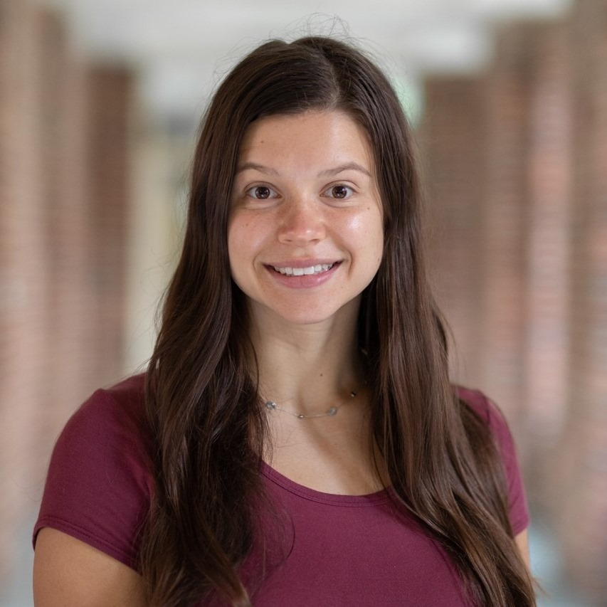

I am a postdoctoral research associate in Klaus Keller's Climate Risk Management Lab in the Thayer School of Engineering at Dartmouth College.
I earned my Ph.D. in Statistics in 2024 from the Penn State Department of Statistics and was advised by Murali Haran.
My interests lie at the intersection of statistics and climate change issues.
Specifically, I am interested in computer model calibration, uncertainty quantification, Markov chain Monte Carlo algorithms,
environmental statistics, spatial/spatiotemporal statistics, climate science, and high performance computing.
CV
